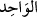
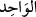

başkası anıldığı zaman hemen yüzleri güler” (ez-Zümer 39/45).
Gazzâlî der ki: Vâhid, parçalanmayan ve iki olmayandır. Parçalanmayan, taksim
kabul etmeyen tek cevher gibidir. İşte buna bir ve tek denilir. Yani “bunun parçası
yoktur; O bir tanedir; tektir” demektir. Aynı şekilde nokta da parçalanmaz. “Allah
birdir” demek, O’nun zâtının bölüm, kısım ve cüzlere ayrılması muhâldir, demektir. Bir
olup iki olmayan da benzeri olmayandır. İşte güneş bu kabildendir. Güneş vehmî ve
hayalî olarak cisimler kabilinden olduğu için taksim ve parçalanmaya müsait olsa da
güneşin bir benzeri yoktur. Ancak olması mümkündür. Varlık âleminde Allah Teâlâ’dan
başka, varlık özelliğiyle mevcut ve münferit olan her şeye o konuda başkasının ortak
olması düşünülür. Allah Teâlâ ise ezeli ve ebedi olarak tek ve mutlaktır. Kul; hayır,
güzel haslet ve meziyetlerden bir haslette kendi cinsleri arasında bir benzeri olmayınca
o konuda tek olur. Bu ise kendi cinslerine ve zamana göre izâfî, nisbî ve görecelidir.
Çünkü başka bir zamanda onun gibi biri ortaya çıkabilir. Bir de bu teklik bütün haslet
ve meziyetlere göre değil, bazılarına göredir. Sonuçta mutlak birlik, bir/tek olmak,
yalnız Allah Teâlâ’ya mahsustur.
Allah Teâlâ’yı hakkıyla yine ancak Allah Teâlâ birleyebilir. Zira Allah’ı birleyen,
yani Allah’ı birleyerek kendi varlığını ve fiilini ispat eden her şey ve herkes, kendisinin
varlığını ve fiilini ispat ederek (hakîkî tek varlık olma konusunda) Allah’ın birliğini
inkâr etmiş olur. Şeyh Ebû Abdullah el-Ensârî’nin şu sözü buna işaret etmektedir:
Bir olan Allah Teâlâ hiçbir kimse tarafından birlenmemiştir.
Çünkü O’na sıfatlar isnat eden herkes O’nu inkâr etmiş olur.
İşte mecazi varlık yok olunca zâtî ve hakikî birlik tam ve doğru olarak ortaya çıkar.
Varlık âleminde mevcut olan her şey onun birlik aynasının ta kendisidir. Nitekim şöyle
denilmiştir:
Her şeyde Allah Teâlâ’yı gösteren bir âyet vardır
Ki o âyet O’nun birliğine delâlet eder
Bunun izahı şudur: Çünkü her şey kendi hüviyetiyle ya hiç parçalanmayacak son
noktaya ulaşmakla yahut başka bir şeyle birdir.
Ey âşık olan Hafız! Vahdetten söz ettiğinde
Tevhid kalemini bu ve şu yaprağının üzerine çek
Şeyh Zerrûkî Esmâ Şerhi’nde der ki: Kim Allah Teâlâ’nın bir olduğunu bilirse
kalbini yalnız O’na tahsis eder ve Allah’ı birlemiş olur. Peygamber (s.a.)’in “Allah
Teâlâ tektir, teki sever”[198] sözü Allah için münferit olan kalbi sever diye tefsir
edilmiştir. “ isminin özelliği bütün oluşumu kalbden çıkarmaktır. Kim “